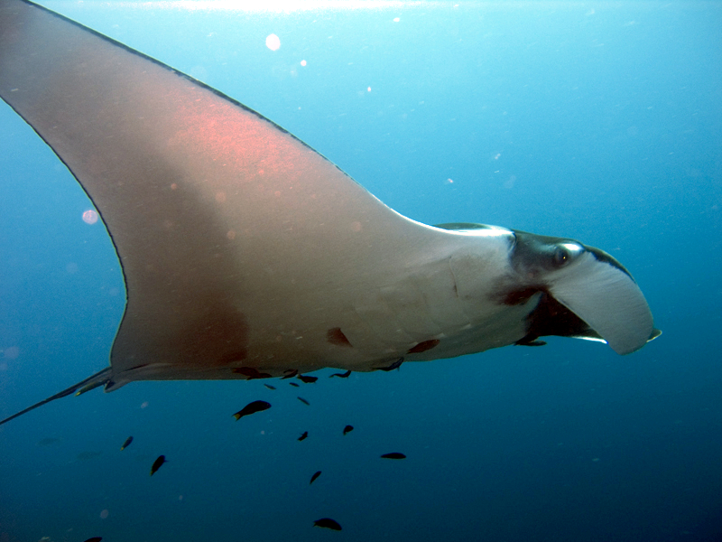

Praví rejnoci (Rajiformes) jsou řád paryb z nadřádu rejnoků. Tento řád zahrnuje dvanáct čeledí s 665 druhy.
| Vědecká klasifikace | |
|---|---|
| Říše | živočichové (Animalia) |
| Kmen | strunatci (Chordata) |
| Třída | paryby (Chondrichthyes) |
| Řád | praví rejnoci (Rajiformes) |